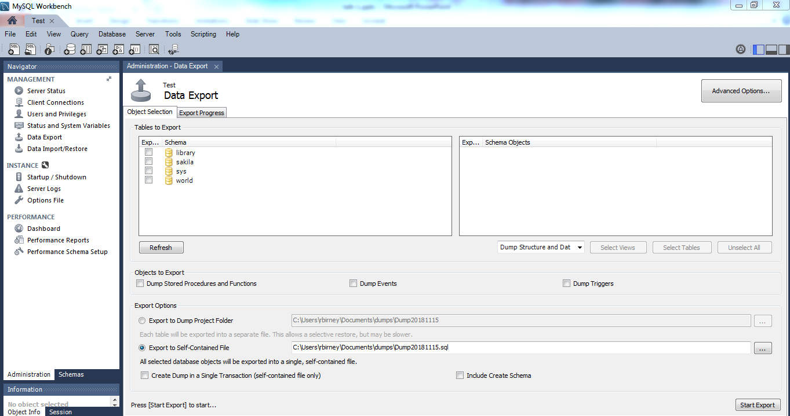
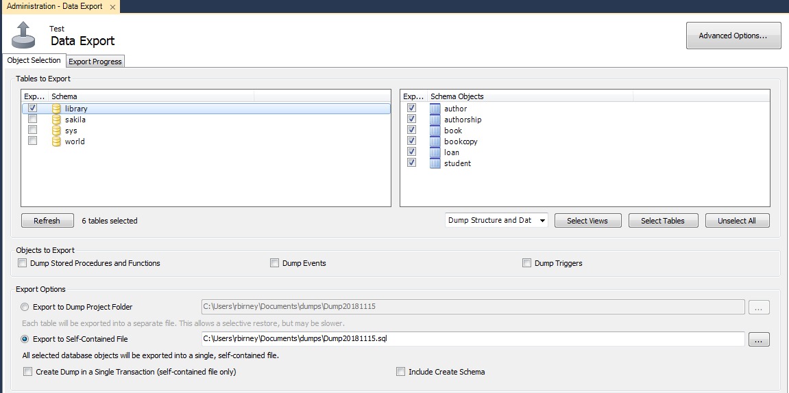
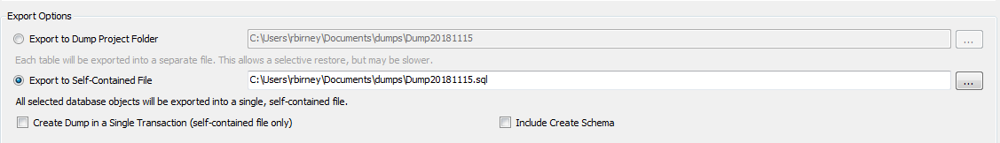
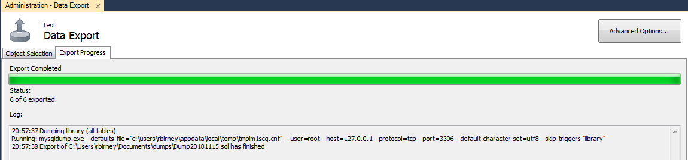
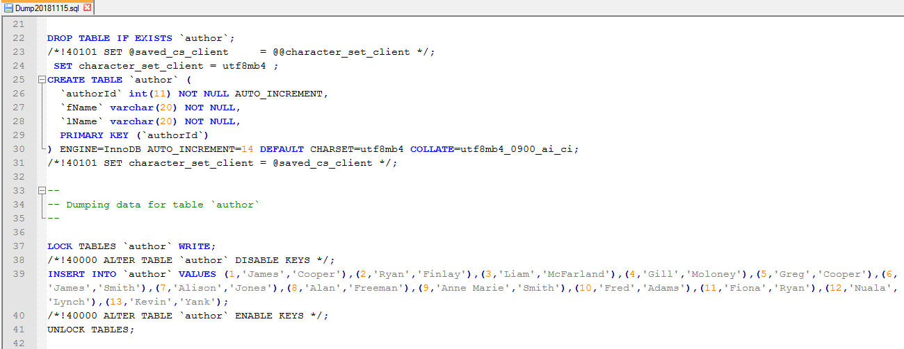
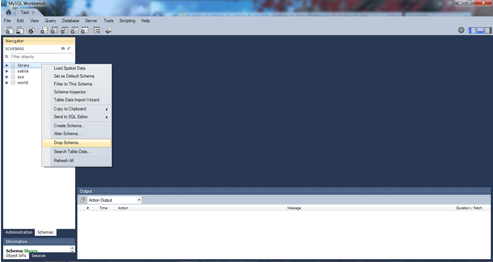
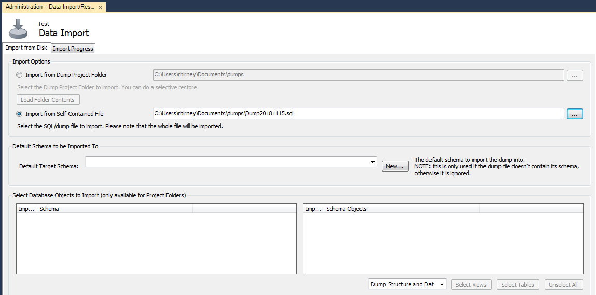
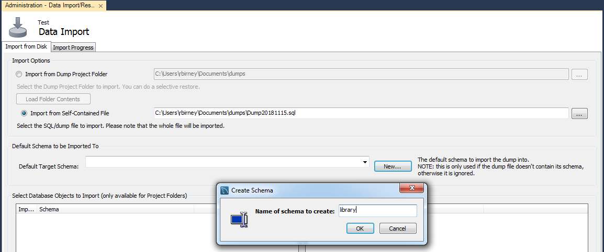
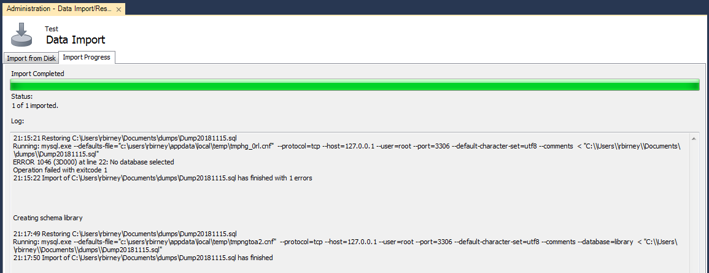
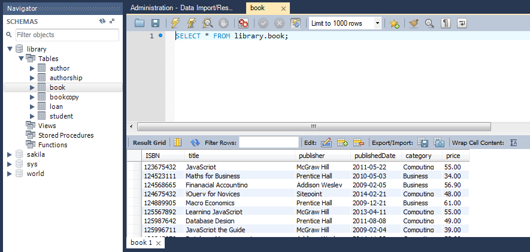

In this lab, we will look at database backup and recovery in MySQL Workbench.
Watch video: https://youtu.be/dH2avf3x4Xg?t=4093
The process to back up a database in MySQL Workbench is relatively simple. Open your localhost connection and go to the Administration tab in the pane on the left. Select the Data Export option.
You will see a list of the databases available to back up. Tick the box next to library to back up the library database.

You can also choose specific tables from the library database to export. Click on the library database (click the folder icon or the word library) to see a list of the tables. By default, they are all selected.

Next, under export options, choose what you wish to output, and the output location. Export to Dump Project Folder creates a folder with a separate SQL file for each table being exported. The other option is "self-contained file", which outputs all tables to one file. We will choose this option in this example, but feel free to try out both options.

Click Export; you should see a progress bar and confirmation message when it has completed successfully.

There should now be an SQL file in the folder location you specified in the export options. Open this file in a text editor and view the contents. You will see that it contains all of the CREATE and INSERT statements required to recreate the library database.

First, we will drop the library database. Right-click on the library database in the schemas panel on the left, and select Drop Schema.
Note: this step is not mandatory; we can also restore the database without dropping it first, in which case it will replace the existing database.

Once you have dropped the library database, go to the Administration tab and select the Data Import/Restore option. Next, select the data to import. You can import from a dump project folder or a self-contained file. Choose the import type that matches your export type: a self-contained file in this example. Click the ... button to browse to the file's location.

Next, under "Default Target Schema" specify the name of the database you want to import into. If you dropped the library database, click New and enter the name 'library'. If you didn't drop the library database, you can choose it from the dropdown list.

Click import; you should see a confirmation message to say that the import was successful.

Go to the Schemas tab and confirm that the library database has been restored (you may need to click refresh). Do a select to confirm that the data within the tables has also been restored.
